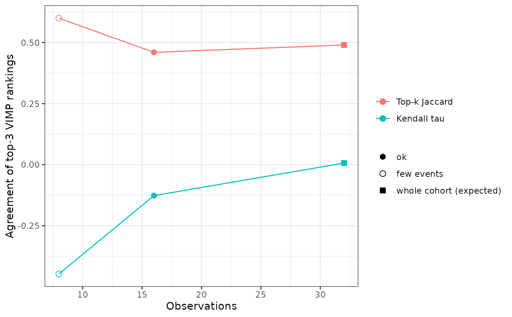
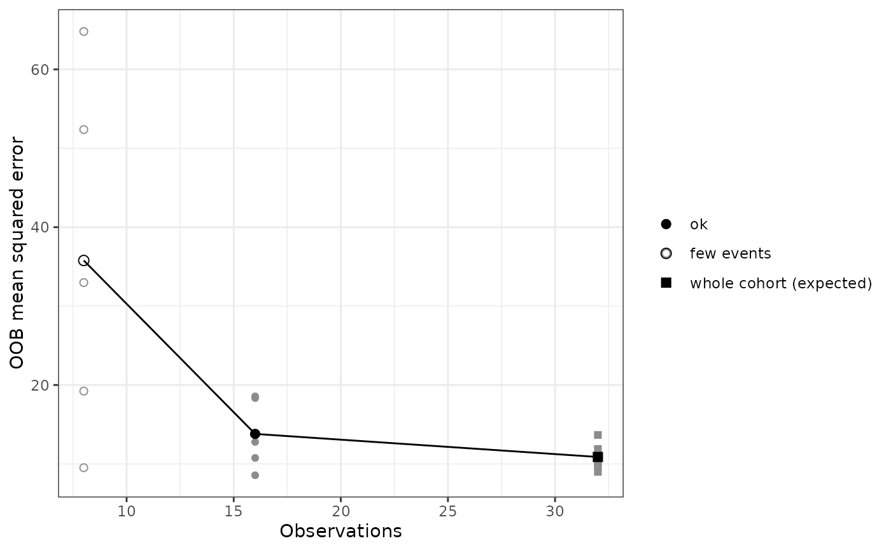

Extracts learning curves from a set of already calculated
randomForestSRC::subsample() results: OOB error, and the stability of the
variable importance (VIMP) ranking, against the number of events (or
observations, for regression) in each subsample. The two curves answer
different questions. The error curve says whether the cohort is large
enough to predict; the stability curve says whether it is large enough to
trust the VIMP ranking and the partial plots drawn from it. A cohort can
pass the first and fail the second.
Arguments
- subsamples
A list of objects returned by
randomForestSRC::subsample(), one per subsampling fraction, all from the same forest and all run withperformance = TRUE. A double-bootstrap result (subsample(bootstrap = TRUE, performance = TRUE)) may be included and is placed at fraction 1. A plain subsample withsubratio = 1is refused: it refits the same cases every time, so its agreement measures forest randomness, not resampling stability. A single result is also accepted.- top_k
Positive integer; the number of top-ranked variables compared between replicates. Defaults to 5. It must leave at least one predictor out: a top set of every predictor is the same in every replicate, so
top_kat or above the number of predictors warns, is capped at that number, and givesjaccardasNArather than a perfect score that says nothing.- min_events
Non-negative number; fractions with fewer events than this are flagged in
low_events. Defaults to 50.- stratified
Logical; for results that do not record it, how the subsamples were drawn, as passed to
subsample(stratify = ). Defaults toTRUE,subsample()'s own default. Results fromlearning_subsample()record the setting, and it is used instead.- ...
Not used.
Value
A data.frame with class c("gg_learning", "data.frame"), one row
per replicate, with columns fraction, n, events, replicate,
error, counts, low_events and optimistic. The stability
attribute is a data.frame with one row per fraction and columns
fraction, n, events, B, jaccard, kendall, counts,
low_events and optimistic.
Details
The expensive step is the refitting inside subsample().
learning_subsample() runs it for every fraction and records how each
draw was made; keep its result and supply it to gg_learning().
gg_learning() only tidies those results; it never fits a forest.
Error. Each replicate's OOB error is the "err" row that
subsample(performance = TRUE) appends to its VIMP table, on the forest's
own scale: 1 - C-index for survival, mean squared error for regression,
and the overall error rate (the all column) for classification.
Stability. At each fraction, every pair of replicates is compared on
its top top_k variables. jaccard is the mean pairwise Jaccard index of
the two top-k sets. kendall is the mean pairwise Kendall rank
correlation, computed over the union of the two top-k sets with ranks taken
from each replicate's full VIMP vector, so a variable that drops out of one
top-k set counts against agreement. Both are restricted to the top k
because the long tail of noise variables would otherwise dominate.
Events. The x axis counts events for survival (deaths, or whatever the
status codes as 1), the size of the smallest class for classification, and
observations for regression. The counts are computed, not observed:
subsample() keeps no record of which cases it drew. With its default
stratify = TRUE it takes the whole part of each class (or status) count
times the fraction. counts says how far that can be trusted:
"exact" when learning_subsample() recorded a stratified draw;
"declared" when the results came from subsample() directly, which keeps
no record, and stratified = TRUE vouches for them; and "expected" for
an unstratified draw, whose counts vary from refit to refit. For those,
the reported counts are what a stratified draw would give and low_events
is NA, because whether a refit fell short is unknown. The double
bootstrap draws as many cases as the cohort holds, with replacement; it is
reported at the cohort's counts, counts = "expected".
Caveats. Subsamples at large fractions share most of their cases:
any two at 0.75 share about three quarters of each other's. Between-replicate
agreement there overstates the stability a fresh cohort of that size would
show, so fractions above 0.5 and below 1 are flagged optimistic. Use the
double bootstrap for the full-cohort point. OOB error from a forest grown on
fewer than about 50 events is pessimistic and noisy, so those fractions are
flagged low_events. The curve covers cohort sizes up to the one observed;
it does not extrapolate.
Provenance is stored in the provenance attribute: family, n and
events of the full cohort, ntree, top_k, min_events, fractions,
replicates per fraction (B), the error metric, and the installed
randomForestSRC version.
References
Ishwaran H, Lu M (2019). Standard errors and confidence intervals for variable importance in random forest regression, classification, and survival. Statistics in Medicine, 38(4), 558–582. doi:10.1002/sim.7803 .
See also
learning_subsample(), plot.gg_learning(),
randomForestSRC::subsample(),
gg_error() for convergence in the number of trees.
Examples
# \donttest{
## Calculate the subsamples once and keep them for reuse.
fit <- randomForestSRC::rfsrc(mpg ~ ., data = mtcars, ntree = 50,
importance = "permute", seed = -1)
set.seed(1)
subsamples <- learning_subsample(fit, fractions = c(0.25, 0.5),
replicates = 5)
curve <- gg_learning(subsamples, top_k = 3, min_events = 10)
summary(curve)
#> fraction n events counts B error_mean error_sd jaccard kendall
#> 1 0.25 8 8 exact 5 35.78079 22.852897 0.60 -0.447213595
#> 2 0.50 16 16 exact 5 13.80185 4.501053 0.46 -0.126666667
#> 3 1.00 32 32 expected 5 10.88033 1.889053 0.49 0.006666667
#> low_events optimistic
#> 1 TRUE FALSE
#> 2 FALSE FALSE
#> 3 FALSE FALSE
plot(curve)

plot(curve, panel = "error")

# }